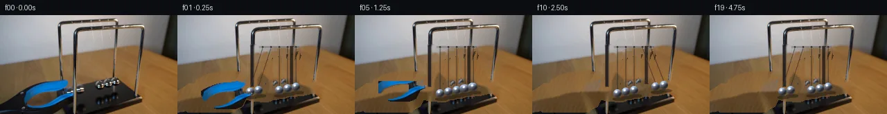

![首帧]()

Round 00
2026-11-06T04:30:58.188026+00:00像素候选变化代码 +308/−0inspection 更新
pixels b5ab43e16162a7e1 · code db82636e879261e2
查看本轮 generate.py 真实 diff
--- previous/generate.py
+++ current/generate.py
@@ -0,0 +1,308 @@
+"""
+PixelWorld-Text case_0052: two balls of a Newton's cradle are released by a
+blue-black grabber tool.
+
+Frame 0 is byte-identical to first_frame.png. Frames 1-19 are produced by:
+ * Telea inpainting + wood cloning of a background plate under the union of
+ every dynamic footprint;
+ * analytic 4x-supersampled chrome spheres on pendulum trajectories with the
+ classic two-ball momentum exchange;
+ * thin suspension strings, dark frame uprights/crossbar, contact shadows;
+ * the exact first-frame grabber sprite (blue+dark connected component)
+ composited while the tool is present, then lifted and faded out.
+All operations are local Python pixel math.
+"""
+from pathlib import Path
+import numpy as np
+import cv2
+from PIL import Image
+
+HERE = Path(__file__).parent
+SS = 4 # supersampling factor
+W, H = 256, 144
+
+# ---------------------------------------------------------------- geometry
+SLOT_X = np.array([123.0, 135.0, 147.0, 159.0, 171.0]) # resting contact line
+SLOT_Y = np.array([114.0, 111.6, 109.2, 106.8, 104.4])
+PIV_Y = 46.0
+L_PEND = 68.0
+D0 = 19.0 # horizontal amplitude displacement (px)
+BALL_R = 6.0
+OMEGA = np.pi / 2.5 # quarter period = 1.25 s
+
+def ball_state(frame):
+ """Return (cx, cy, active) for the 5 balls at frame index 0..19."""
+ t = frame * 0.25
+ cx = SLOT_X.copy(); cy = SLOT_Y.copy()
+ # signed displacement of the moving pair, in units of D0, per half-swing
+ s = np.zeros(5)
+ if frame == 0:
+ s[0] = s[1] = -1.0
+ elif t <= 1.25 + 1e-9: # release swing, balls 0,1
+ k = -np.cos(OMEGA * t) # -1 -> 0
+ s[0] = s[1] = k
+ elif t <= 2.5 + 1e-9: # right pair flies out
+ k = np.sin(OMEGA * (t - 1.25)) # 0 -> 1
+ s[3] = s[4] = k
+ elif t <= 3.75 + 1e-9: # right pair returns
+ k = np.cos(OMEGA * (t - 2.5)) # 1 -> 0
+ s[3] = s[4] = k
+ else: # left pair ejected again
+ k = -np.sin(OMEGA * (t - 3.75)) # 0 -> -1
+ s[0] = s[1] = k
+ dx = s * D0
+ dy = L_PEND - np.sqrt(np.maximum(L_PEND**2 - dx**2, 0.0))
+ cx = SLOT_X + dx
+ cy = SLOT_Y - dy
+ return cx, cy
+
+def ball_state_plus(frame):
+ """state plus a small velocity estimate (px/frame) for motion smear."""
+ cx, cy = ball_state(frame)
+ f2 = min(frame + 1, 19)
+ nx, ny = ball_state(f2)
+ return cx, cy, nx - cx, ny - cy
+
+# ------------------------------------------------------------ first frame
+f0 = np.array(Image.open(HERE / 'first_frame.png').convert('RGB'))
+assert f0.shape == (H, W, 3)
+r0 = f0[..., 0].astype(int); g0 = f0[..., 1].astype(int); b0 = f0[..., 2].astype(int)
+lum0 = (0.3 * r0 + 0.59 * g0 + 0.11 * b0)
+yy0, xx0 = np.indices((H, W))
+
+# ------------------------------------------------------------ grabber mask
+blue = (b0 > 110) & (b0 - r0 > 35)
+dark = lum0 < 52
+reg = (xx0 <= 112) & (yy0 >= 90) & (yy0 <= 140)
+n, lab, stats, _ = cv2.connectedComponentsWithStats(((blue | dark) & reg).astype('u1'), 8)
+comp = lab == (1 + int(np.argmax(stats[1:, cv2.CC_STAT_AREA])))
+env_poly = np.array([
+ (33, 104), (36, 98), (46, 94), (60, 93), (84, 95), (100, 99),
+ (108, 107), (112, 100), (112, 113), (104, 116), (99, 118),
+ (96, 122), (92, 131), (80, 136), (60, 136), (46, 132),
+ (38, 124), (33, 114)], np.int32)
+env = np.zeros((H, W), 'u1'); cv2.fillPoly(env, [env_poly], 1)
+grab_mask = (comp & env.astype(bool) & (lum0 < 125) & (yy0 <= 135)).astype('u1')
+grab_mask = cv2.morphologyEx(grab_mask, cv2.MORPH_CLOSE, np.ones((3, 3), 'u1'))
+grab_mask = cv2.morphologyEx(grab_mask, cv2.MORPH_OPEN, np.ones((2, 2), 'u1'))
… diff truncated; 221 more lines …